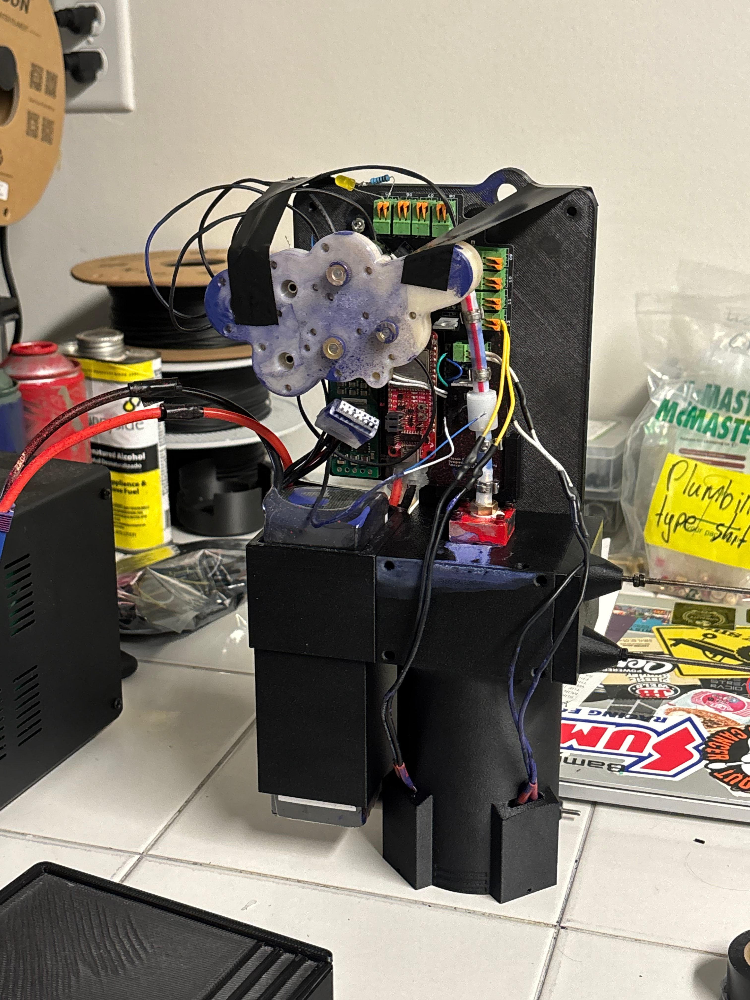

Robotic Mural Printer
A printer that sprays small dots to recreate an image on large walls.
Systems Integration
Motion Control
Embedded Systems
Python Tooling
3D Design
Rapid Prototyping

A printer that sprays small dots to recreate an image on large walls.
The Mural Printer is a large scale wall painting robot designed to recreate digital images on vertical surfaces using coordinated motion and controlled paint deposition. The system turns images into thousands of discrete points and physically recreates them with small dots across a wall. The main image is a 14ft wide mural composed of 120,000 individually placed dots, highlighting the reliability of the system.

The architecture consists of two subsystems:

Custom Python software converts images into optimized coordinate paths and timing instructions. These instructions, similar to Gcode are transmitted to ESP32 microcontrollers, which manage moving the chassis around the wall and telling it to spray at precisely the right positions. The system operates similarly to a large format inkjet printer, where motion and deposition timing must remain tightly coordinated to maintain visual accuracy.
The project required development of custom slicing algorithms, modeling and tuning of cable driven kinematics, and iterative mechanical redesign to improve stiffness, speed, and positioning accuracy. It also involved deliberate material selection to ensure long term reliability when handling spray paint. Most structural and functional components were designed in SolidWorks and fabricated through 3D printing, enabling rapid iteration of mechanical layouts, mounting systems, and actuator housings.


This project represents an end to end integration of mechanical design, embedded control, and software tooling to produce a scalable, automated fabrication system.